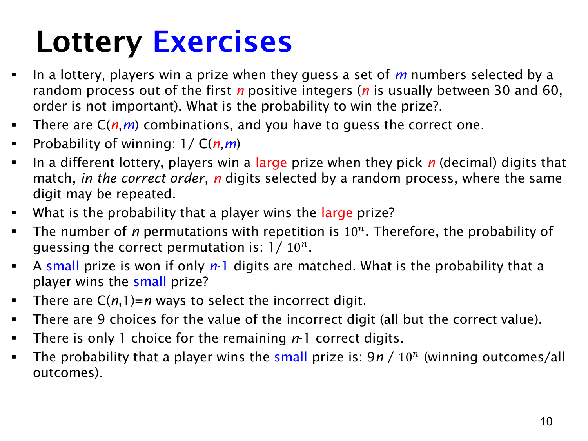

L1.9 · 第 10 页讲解原文
查看这一页课件

两种彩票的中奖概率
从 1,…,n 中随机选 m 个不同数字，开奖只看集合，不看顺序。若所有 m 元子集等可能，固定猜一组只有一个匹配结果，中奖概率就是
(mn)1.
例如猜 {1,3,5}，开奖时这三个数按什么次序出现都算中，因此分母用组合数。
另一种彩票要求猜中一串 n 位十进制数字，每个位置都要匹配。数字可重复，也可由 0 开头；这里没有“n 位正整数首位非零”的限制。10n 个数字串等可能，大奖概率为
p(大奖)=10n1.
小奖要求“恰好 n−1 位正确”。选出唯一错位有 n 种方法，该位可填正确数字以外的 9 个数字，其他位置都固定。因此
p(小奖)=10nn⋅9.
若正确串是 528，单错串有 3×9=27 个，小奖概率为 27/1000。若规则改成“至少 n−1 位正确”，还要算上全部匹配的那个串，概率随之变为 (9n+1)/10n。